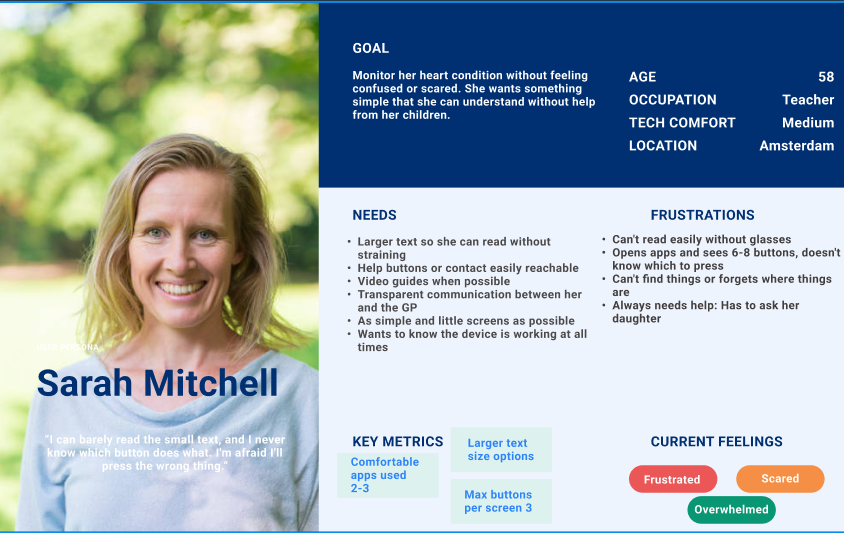
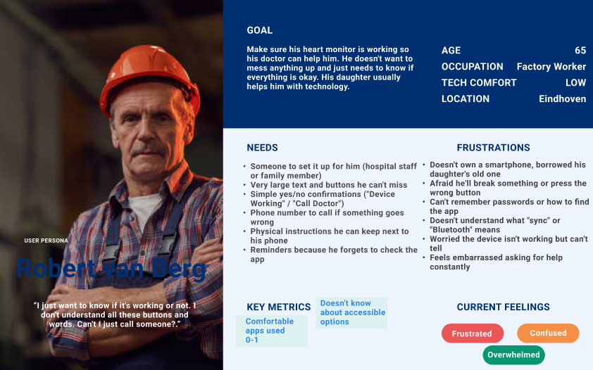
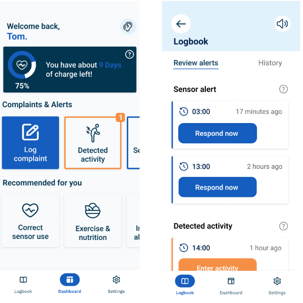
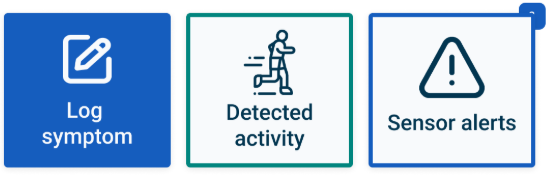
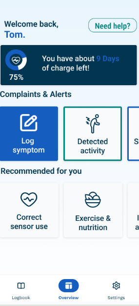
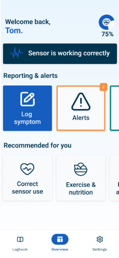
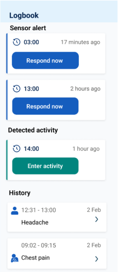
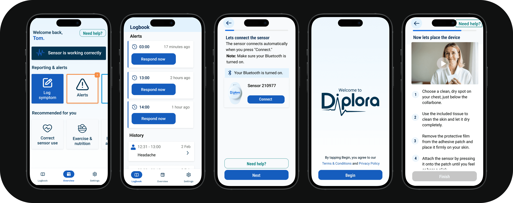

I used a mixed-methods research approach to understand the gap between Diplora's capable ECG hardware and the experience of using it at home. The research had to answer two connected questions: what do older adults need in order to feel confident using a monitoring device, and what can the patient-facing app communicate without crossing into diagnosis?
The project focused on an accessible ECG companion app for elderly cardiovascular patients. The app was not intended to interpret ECG results for patients. Its role was to make the monitoring process understandable by showing device status, connection, battery, recording state, and clear next steps when something needed attention.
Main research question: How can an elderly-accessible ECG interface address barriers such as font size, contrast, touch targets, and cognitive load while meeting medical-device requirements?
I reviewed WCAG 2.1 AA guidance, research into older adult interfaces, and medical-device requirements before making design decisions. Presbyopia, reduced contrast sensitivity, slower touch interactions, and different levels of digital confidence pointed to larger text, strong contrast, simple language, and touch targets of at least 44 by 44 pixels. The review also clarified the product boundary: the app should communicate device status, battery, and connection, while diagnostic interpretation remains with healthcare professionals.
I spoke with cardiologists, GPs, and company stakeholders about the clinical and technical requirements behind the interface. We discussed the value of longer monitoring periods, leads detaching, movement affecting signal quality, and the importance of accurate sensor placement. This clarified that the patient app should confirm whether the device is connected, recording, and working, while reports and diagnostic interpretation remain with specialists. That boundary shaped the status bar, onboarding language, placement guidance, and alerts.
I conducted in-depth interviews with elderly Holter monitor users aged 70 and above to understand what monitoring felt like at home. Participants described physical discomfort, anxiety about whether the device had stopped working, and confusion caused by technical information. They were less interested in graphs than in simple answers: is it working, are readings being recorded, and what should I do if something goes wrong? This informed the focus on reassurance, large text, simple navigation, and visual guidance.
I ran a quantitative survey with 50 respondents aged 18 to 75 and above to test whether the interview themes appeared at a broader scale. The strongest findings were that 54% found health apps too complicated, 14% of respondents aged 46 and above struggled with small text, and 70% wanted clear confirmation that their device was working. Video demonstrations were preferred by 66% of respondents, followed by step-by-step pictures at 56%. These results turned reassurance, visual guidance, and simplified navigation into evidence-based priorities.
I reviewed the existing Figma designs with Diplora stakeholders before moving into prototyping. This exposed small default text, inconsistent visual language, unclear status communication, and an onboarding flow that asked users to process too much information. I used the feedback to refine the visual direction, simplify the highest-risk flows, and define the MVP around accessible onboarding, a persistent status bar, device pairing, help, emergency contact access, and focused symptom logging.
I helped shape Diplora's visual identity around medical credibility, reassurance, and ease of use. The design needed to feel trustworthy and calm without making the interface feel clinical or intimidating, especially for older adults using the app at home.
I translated the research into practical standards: minimum 18pt body text, at least 4.5:1 contrast, 44x44px touch targets, clear hierarchy, readable language, and icons supported by text labels.
I established reusable patterns for buttons, cards, navigation, status feedback, spacing, and form controls. These components created a consistent foundation for the Flutter implementation and future development.
The design system turned research findings into rules that could be reused and checked throughout the product. With the visual and accessibility foundation in place, the next step was to decide which user needs were essential for the MVP and how those needs should shape the product flow.
Using the MOSCOW method, I prioritized features based on accessibility and clinical validation requirements. Must-have features address the core needs identified in research.
I mapped the experience from unboxing and account setup through sensor placement, pairing, daily status checks, emergencies, and the end of the monitoring period. The map highlighted where users were most likely to feel lost or anxious, especially during setup and when checking whether the device was still working.
Must-haves were accessible onboarding, device pairing, persistent status feedback, emergency contact access, and a clear device-working confirmation. Video guidance, symptom logging, history, and haptic or audio feedback were prioritized as should-haves. Multi-language support, advanced filtering, 3D placement guidance, and family notifications were future enhancements. Diagnostic interpretation, AI recommendations, social features, and gamification were intentionally out of scope.
The central takeaway was that patients needed reassurance, not more medical data. Across the research, the same needs kept appearing: the interface must be readable, users must be able to tell whether the sensor is working, setup must be guided, and diagnostic interpretation must stay out of the patient experience. These findings became the criteria for the next phase: a design system that makes accessibility measurable and a requirements set that turns anxiety and confusion into specific product decisions.
Two primary user personas informed the design, representing the distinct needs of elderly patients and their healthcare providers.

Represents elderly patients aged 65+ who prioritize device reassurance and simple operation over comprehensive medical data.

Healthcare professionals and caregivers who need diagnostic data access while ensuring elderly users have simplified, reassuring experiences.
The requirements phase converted broad concerns such as confusion and anxiety into testable product decisions. It gave the prototype a clear job: help a patient set up the sensor, confirm that it is working, and get help without exposing unnecessary medical complexity. The next phase tested whether those decisions worked when real users interacted with them.
I started with paper prototypes to test the structure before investing in high-fidelity screens. The onboarding flow was reduced from more than seven screens to four essential steps, accessibility options moved into setup, and the dashboard was stripped back to the information users needed most: device status, battery, connection, and reassurance.
I tested the main flows with older users using structured tasks, think-aloud feedback, observation, and short post-test interviews. The testing focused on onboarding, status checking, symptom logging, alerts, help, and sensor connection. This revealed where the accessibility decisions worked and where the language or hierarchy still created friction.
The design underwent six major iterations based on combined feedback from user testing, expert review, and internal stakeholder input. Each iteration was informed by real user behavior and expert guidance.

IssueTest users confused "Add Complaint" with complaining about the sensor itself.
ChangeRenamed it to "Log Symptom" and changed "Detected Activity" to "Activity History".
ImpactUsers immediately understood each button's purpose.

IssuePlaceholder icons did not clearly communicate their functions.
ChangeReplaced unclear icons and added text labels to all navigation items.
ImpactFunctions became immediately recognizable.

IssueMildred could not find instructions when needed; Ben requested an easy Help button.
ChangeAdded a visible Help button to the main navigation.
ImpactUsers can access instructions without navigating through settings.

IssueThe large battery indicator took too much space and drew attention away from actions.
ChangeReduced the battery to a small status indicator in the persistent status bar.
ImpactRefocused the home screen on actionable items and reduced visual clutter.

IssueSeparate alert and history tabs with filters made the logbook feel overcomplicated.
ChangeCombined both views into one list and removed unnecessary filtering.
ImpactCreated a cleaner, less technical interface that is easier to navigate.
Designed high-fidelity prototypes based on feedback from low-fidelity testing. These detailed, interactive prototypes incorporated refined design elements and enhanced functionality, providing an accurate representation of the final product ready for user validation.
Testing confirmed that accessibility was more than a visual specification. Large targets and clear status feedback worked, but vague labels, hidden help, oversized battery information, and excessive scrolling still created uncertainty. The validated prototype balanced reassurance with restraint and gave implementation a focused, testable direction.
I moved into Agile development once the core direction had been validated. I translated the approved interface into a Flutter MVP, building reusable components and testing the experience on real devices as the product evolved. The implementation focused on a maintainable foundation rather than presenting unfinished clinical functionality as complete.
Work was organized into short sprints with planning, daily progress tracking, reviews, and retrospectives. The first sprint established the Flutter structure, design-system components, onboarding, and accessibility foundations. The following sprint focused on the dashboard, persistent sensor status, device pairing, emergency contact access, and navigation. Later work addressed BLE testing, logbook integration, accessibility refinement, performance, and bug fixing.
The app flow moves from onboarding and accessibility settings into device pairing, then into a dashboard with persistent battery, connection, and recording status. Symptoms are stored locally through the logbook and the structure is ready for Supabase integration. BLoC separates business logic from the UI, keeping the Flutter codebase maintainable and easier to extend.
Bluetooth required careful handling of scanning, connection states, sensor communication, and recovery when a device was not found. The interface also had to stay consistent with the approved designs while remaining responsive on older devices. The logbook introduced a second integration challenge: storing, editing, and retrieving symptom entries in a way that could later connect to the Supabase backend.
I used manual testing on real iOS and Android devices, accessibility checks with screen readers, performance checks on older hardware, and stakeholder acceptance testing. The definition of done included mentor review, no critical bugs in the tested flows, accessibility validation, and updated documentation. This process also exposed implementation issues that were not visible in the prototype, such as contrast and touch-target inconsistencies.
The alert system uses simulated movement rather than final sensor movement detection, and the backend integration still needs to connect logging and alerts to the wider platform. ECG data volume can create lag on-device, the movement matrix from a previous intern is not yet integrated, and broader testing across iOS and Android devices is still recommended. The emergency-contact frontend is designed, but sending alerts requires backend support.
The planned MVP was completed as a functional proof of concept. The Diplora style guide was implemented in Flutter through reusable components, the accessibility standards were carried into code, and the BLoC-based structure supports future development. The result connects the tested design direction to a working application while making the remaining product and platform work explicit for the next team.
Walkthrough of the completed Diplora application and its core functionality, including real BLE sensor connection and scanning, movement visualization, symptom logging, activity alerts, and the persistent battery, connection, and recording status bar.
